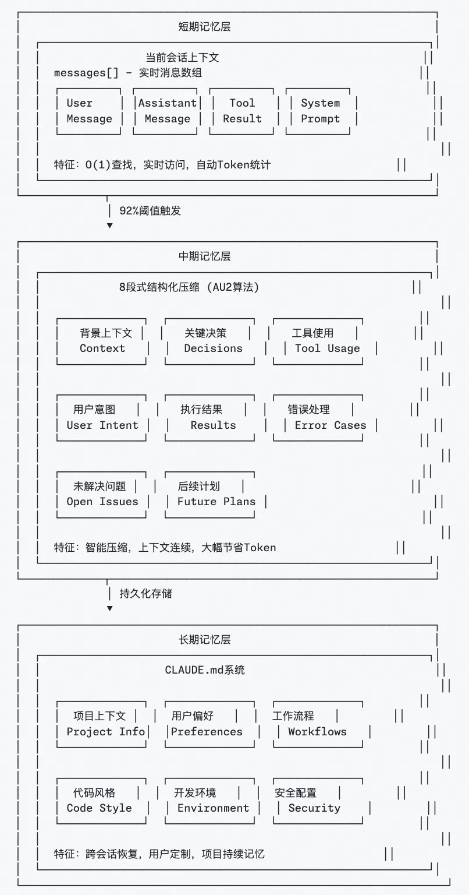

上下文工程实践¶
约 1761 个字 1 张图片 预计阅读时间 6 分钟
在上下文工程领域，有三个产品代表了不同的实践方向：
-
LangChain：代表 Agent 框架和工具集合，早期的 Agent 框架，提供了各种Agent开发的基础设施，提出了一套上下文管理的方法论。
-
Claude Code：代表 Code Agent 能力上限，编码 Agent 的能力标杆，在长短记忆、分层多 Agent 协作等方面有独到实践。
-
Manus：重新展现 Agent 能力，让 Agent 回到大众视野，带动 MCP 发展，在工具使用、缓存设计等方面有独到实践。
1.LangChain¶
1.1 上下文卸载¶
并非所有上下文都要保存在消息历史中，可将部分信息卸载到外部系统。
做法：使用文件系统保存工具调用结果，仅在上下文中保留引用，在需要时再通过检索加载完整内容。
1.2 上下文缩减¶
控制上下文窗口长度，防止性能下降。
做法：摘要工具输出；修剪旧的工具调用；自动触发压缩机制。
1.3 上下文检索¶
按需动态检索上下文，而非全量加载。
做法：
-
语义检索+向量检索
-
文件系统+简单命令（bash command:grep/glob）
1.4 上下文隔离¶
做法：多智能体结构，每个子智能体有独立上下文窗口，实现关注点分离。
1.5 上下文缓存¶
缓存关键上下文片段，避免重复处理；提升智能体在长会话、多轮推理下的性能。
2.Claude Code¶
2.1 三层记忆架构¶
在长对话中，上下文管理面临token限制导致信息丢失、传统压缩方法破坏上下文连续性、无法支持复杂多轮协作任务等挑战。
Claude Code构建了三层记忆系统：短期记忆（当前对话）、中期记忆（智能压缩）、长期记忆（CLAUDE.md项目知识库），实现从实时访问到持久化存储的完整覆盖。
关键要点：
-
92%阈值自动触发智能压缩
-
8段式结构化保存核心信息
-
跨会话恢复项目背景和用户偏好

2.2 实时 Steering 机制¶
传统 Agent 无法中断，用户必须等待完整执行结束才能调整方向，导致资源浪费和用户体验差，无法应对动态变化的需求。
Claude Code 的解决方案是采用异步消息队列 + 主循环的双引擎设计，支持实时中断和恢复，用户可以随时调整任务方向，系统自动保存状态并无缝切换。
关键要点：
-
异步消息队列支持实时中断。
-
主循环自适应流程控制。
-
流式输出提供持续交互反馈。
2.3 分层多 Agent 协作¶
复杂任务需要并发处理多个子任务，单 Agent 模式容易出现上下文污染、资源竞争和故障传播，影响整体执行效率和稳定性。
Claude Code 的解决方案是采用主 Agent 负责任务协调，SubAgent 执行专项任务，实现隔离执行环境，调度器控制最多 10 个工具并发，确保任务隔离和资源优化。
2.4 动态上下文注入¶
用户在对话中提及文件或概念时，系统无法自动关联相关信息，导致模型缺乏必要的上下文背景，影响响应质量和准确性。
Claude Code 的解决方案是智能检测用户意图中的文件引用，自动读取相关内容并注入上下文，基于依赖关系推荐相关文件，提供语法高亮和格式化显示，最大20文件8K Token限制。
关键要点：
-
自动识别和注入相关文件内容。
-
智能推荐基于依赖关系分析。
-
容量控制和格式优化提升体验。
3.Manus¶
3.1 为什么需要上下文工程¶
-
模型微调成本高、风险大
-
应用快速演进期更适合依赖通用模型+上下文控制
-
上下文工程是“模型与应用之间最清晰的边界”
3.2 上下文缩减：压缩与摘要¶
3.2.1 压缩¶
每次工具调用结果有两种格式：
-
完整格式（含全部字段）
-
紧凑格式（去除可重建字段，仅保留路径或引用）
可逆（reversible）缩减，不丢失信息，只是外部化。
触发机制：
-
当上下文长度达到“腐烂前阈值”（128k~200k tokens）时触发压缩；
-
仅压缩历史 50% 工具调用，保留近期完整内容。
3.2.2 摘要¶
-
不可逆操作，用于超大上下文；
-
在压缩收益变低时启用；
-
摘要前会将完整内容卸载到外部文件系统；
-
使用结构化模式生成摘要（非自由文本）。
3.3 上下文隔离：通信与共享内存模式¶
两种模式：
| 模式 | 特点 | 适用场景 |
|---|---|---|
| 通过通信共享内存（“agent as tool”） | 主智能体以任务指令调用子智能体 | 明确、独立任务 |
| 通过共享上下文 | 子智能体可见完整上下文，拥有独立 action space | 复杂研究、分析型任务 |
权衡点：
-
共享上下文消耗高（预填充 Token、不可复用 KV 缓存）
-
通信模式简单高效但信息不完整
3.4 上下文卸载：分层式行为空间¶
为避免“上下文混淆”（过多工具导致模型混乱），Manus 将工具空间分为三层：
| 层级 | 内容 | 特点 |
|---|---|---|
| 第1层：函数调用 | 原子函数（读写文件、搜索、Shell 命令 | Schema 安全、缓存友好 |
| 第2层：沙盒工具 | 在虚拟机内运行的系统命令，如 grep、MCP CLI | 可扩展功能、不破坏缓存 |
| 第3层：代码与 API | 通过 Python 脚本或 API 访问外部服务 | 高可组合性、适合重计算任务 |
关键特征：
-
所有层最终仍以标准函数调用形式执行；
-
行为空间正交（orthogonal），缓存一致；
-
提升系统模块化与灵活性。
3.5 五个核心维度的平衡¶
上下文工程的五个维度：
卸载（offload）- 缩减（reduce）- 检索（retrieve）- 隔离（isolate）- 缓存（cache）
它们相互制衡：
-
卸载 + 检索 → 提高缩减效率
-
稳定检索 → 安全隔离
-
过度隔离 → 降低缓存与推理效率
👉 “上下文工程是一门艺术，需要在相互冲突的目标中找到平衡。”
3.6 避免上下文过度工程¶
“最重要的经验：少做加法，多做理解。”
-
过度的上下文管理层、复杂的检索机制常适得其反；
-
最有效的优化往往来自简化架构与信任模型。
4.Reference¶
震惊！不微调也能让AI变强？Manus上下文工程揭秘，让大模型迭代速度提升10倍！
浅谈上下文工程｜从 Claude Code 、Manus 和 Kiro 看提示工程到上下文工程的转变
小白入门LLM Context上下文工程：从基础到实践，通俗易懂讲明白